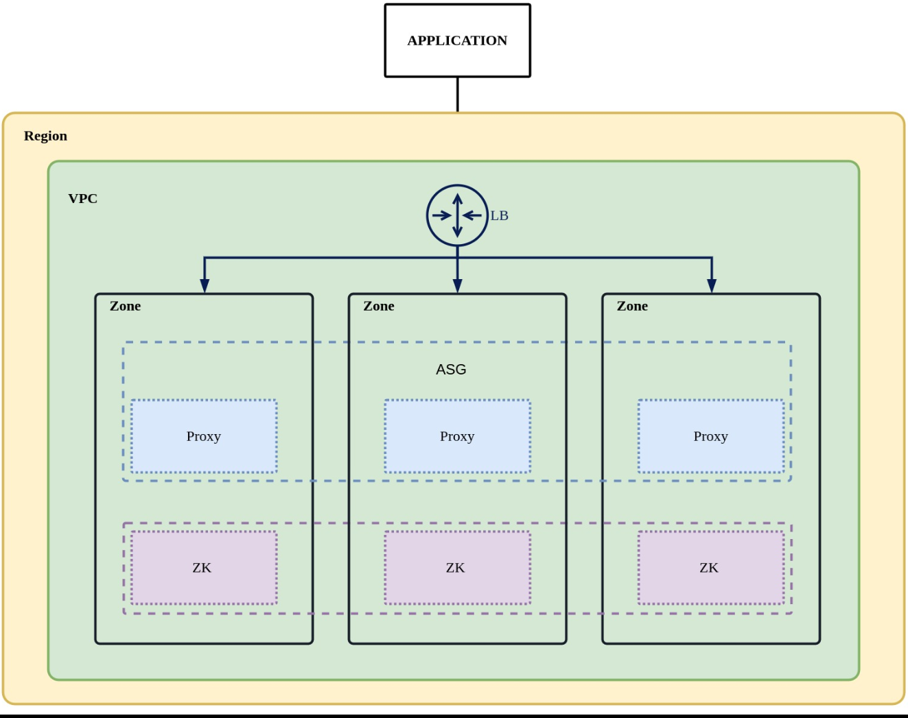

什么是 ShardingSphere-on-cloud?
ShardingSphere-on-Cloud 项目是面向 Apache ShardingSphere 的云上解决方案集合，包括在 AWS、GCP、阿里云等云环境下面向虚机的自动化部署脚本，如 CloudFormation Stack 模板、Terraform 一键部署脚本等，在 Kubernetes 云原生环境下的 Helm Charts、Operator、自动水平扩缩容等工具，以及高可用、可观测性、安全合规、等方面的各类实践内容。
核心概念
目前本仓库涉及的术语均来自常见的云服务提供商和开源项目，相关概念和定义保持一致。
- CloudFormation：是 AWS 提供的一个工具，可以帮助我们快速创建云资源。
- CloudFormation Stack：是 AWS 资源的集合，可以将其作为一个单元进行管理。
- Terraform： 是一个开源的基础设施管理工具，使用 “infrastructure as code” （基础设施即代码）的理念，可以高效的构建，更改及版本化基础设施。
- Kubernetes：是一个开源的容器编排管理平台，可自动部署、管理和扩展容器应用。
- Operator： 是 Kubernetes 的扩展软件， 它利用定制资源管理应用及其组件。 Operator 遵循 Kubernetes 的理念，特别是在控制器方面。
- Helm Charts： Helm 是 kubernetes 应用的包管理工具，Charts 是描述一组相关的 Kubernetes 资源的文件集合。
基础架构
- ShardingSphere-Operator 示意图

- ShardingSphere-Terraform 示意图

项目功能
- 基于 Helm Charts 的 ShardingSphere Proxy 在 kubernetes 环境下一键部署
- 基于 Operator 的 ShardingSphere Proxy 在 kubernetes 环境下一键部署和自动运维
- 基于 AWS CloudFormation 的 ShardingSphere Proxy 快速部署
- 基于 Terraform 的 AWS 环境下 ShardingSphere Proxy 快速部署
应用场景
对于 SharidngSphere-On-Cloud 提供的不同部署方案有如下应用场景：
- 如果您想快速了解，验证或者使用 ShardingSphere Proxy 的功能特性，又没有 Kubernetes 环境的时候，您可以用 AWS CloudFormation 或者是 Terraform 来按需部署。
- 如果您想在 kubernetes 环境中部署的时候，您可以体验我们提供的 Operator 功能，或者不使用 Operator， 直接通过 helm charts 部署原生的 ShardingSphere Proxy。